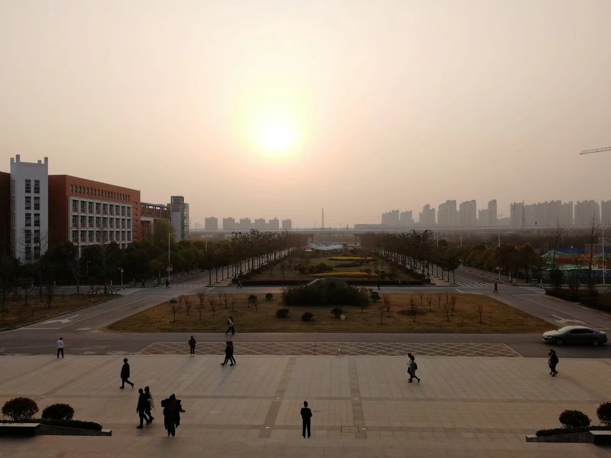
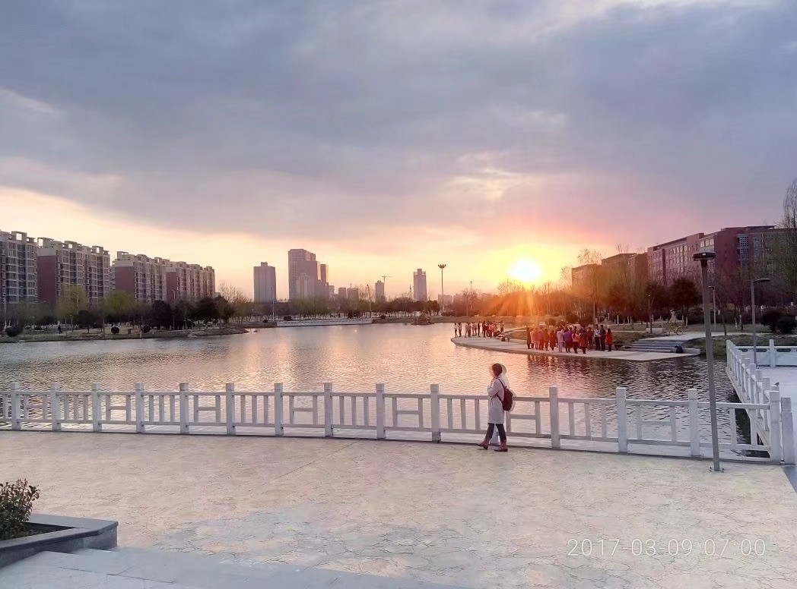

-
Part One
你有梦想吗？
你的梦想是什么？
你为你的梦想行动了吗？一个星期之前，我当着室友的面豪情万丈的说:“我要减肥，从明天开始早起跑步， 除了正餐什么都不吃。”然而第二天十点多才从被窝里爬出来，先是去食堂吃了饭， 又吃了两人份的蛋糕，接着就是薯片、可乐、鸡排等等等等。就在昨天，我的室友 又重复了我一个星期前的话，并且在今天重复了我一个星期前的行为。读到这里你 应该笑了吧！但我想说的时这样的事每天都在不同的人身上上演，颇有一种你方唱 罢我方登场的架势，这个世界上永远不缺拥有梦想的人，缺的只有有梦想亦有行动 且坚持的人。
生活中成功的例子比比皆是，且每一个成功者的总结中都有为梦想行动且坚持这一条。 所以说，失败者都有各自不同的理由或借口，成功者却有同样的方法和技巧。记得在书上 看过一句话，最幸福的事情是有所爱，有所期待。我却认为最幸福的事情是有所梦亦有所动 。如果连一件自己很有兴趣的事情都不能坚持的话，那还能坚持什么呢？
-
Part Two
我喜欢的东西很贵，我想去的地方很远，我爱的人超完美
高考一过，我来到了郑航，每个人去往一处都有他自己的目的，都有他自己的际遇。我的际遇是遇到了你们。
向往的生活不过是 每天完成自己的功课，迎着朝阳泡在图书馆。夕阳西下时，带着美好的心情离去
不为工作所烦心，不为学习所忧虑，不为游戏而困扰
每天看看美好的风景也是不错的
-
Part Three
梦想没有大与小之分，梦想没有迟与早之分
学习就像马拉松比赛，即使你现在落后了，只要你努力，也能赢得比赛。
慢鸟先飞、多飞
如果一件工作别人可以在一个小时内轻松完成，而你却需要三个小时， 那么你就每天拿出三个小时来完成这件工作直到你熟练为止。也许起点上 你会输给别人，但是在付出了极大的努力后，最终赢得比赛的会是你， 无论是工作还是学习。
我们现在还是一无所有的，唯一能壮大我们的只有知识！唯有梦想！
每个人都有远大的梦想，但再大的梦想也要从一点一滴做起，在 通往远大目标和理想的道路上，会遇到各种各样的困难，不要向这些 困难低头，要做的是迎头面对困难，从这些困难中看到机会。
给自己一份信心，忘掉烦恼，忘掉失败，成败未定不能放弃。 不抛弃，不放弃，为了梦想拼搏，无怨无悔，方成大气！